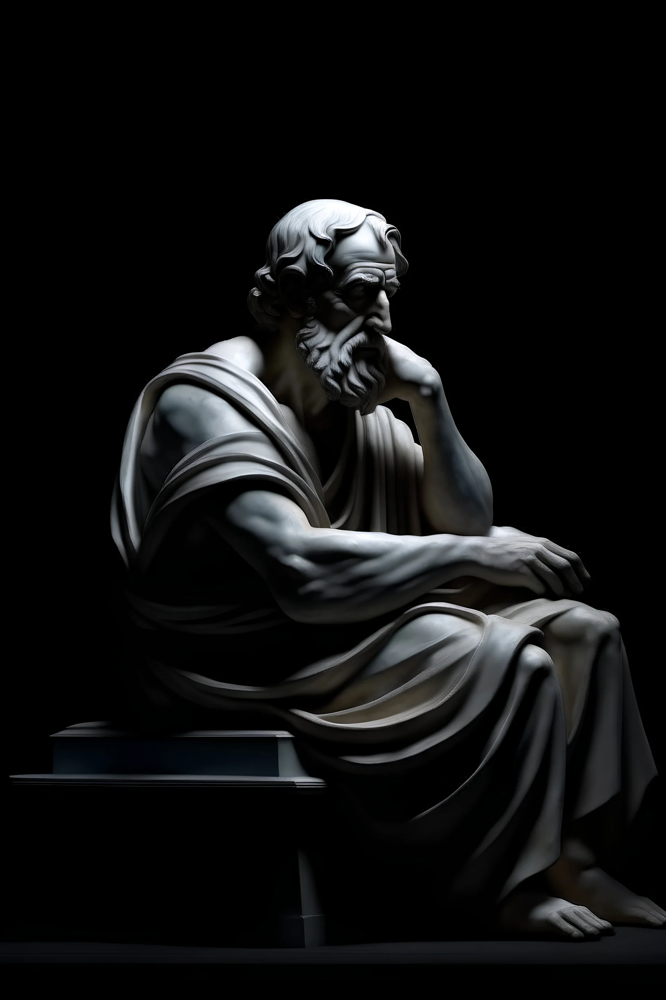

Philosophy is not a body of knowledge, but an activity: the unyielding, critical interrogation of Being itself. It's the relentless questioning of fundamental assumptions about reality, knowledge, value, reason, mind, and language. It doesn't seek definitive answers as much as it seeks to clarify the questions, to expose hidden presuppositions, and to push the boundaries of human understanding. This "unyielding interrogation" emphasizes philosophy's restless, questioning spirit – it's never satisfied with easy answers, always probing deeper, challenging received wisdom, and striving for a more profound grasp of existence. It's a perpetual process of inquiry, driven by an insatiable curiosity about the nature of things. It's the refusal to accept anything at face value, the insistence on examining the foundations of our beliefs and values.
